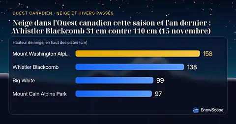
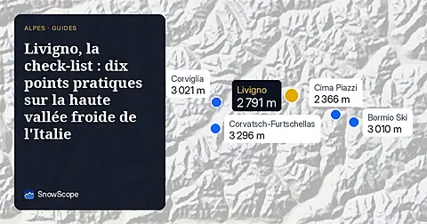
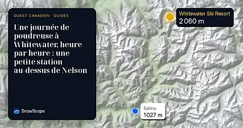
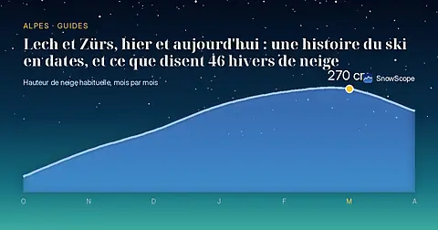
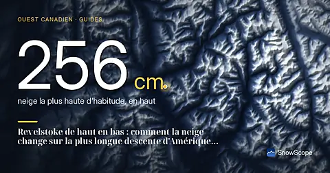
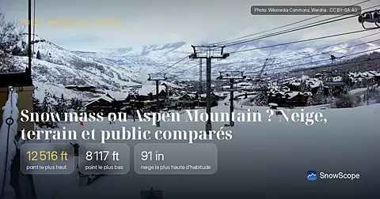
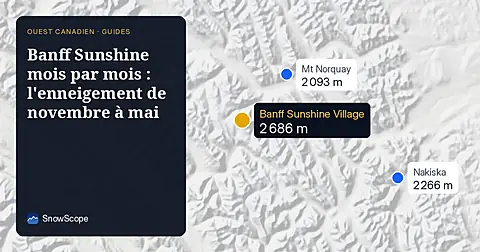
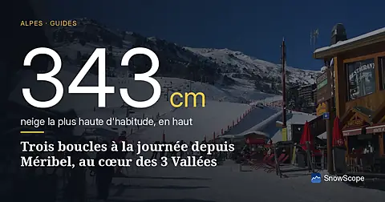
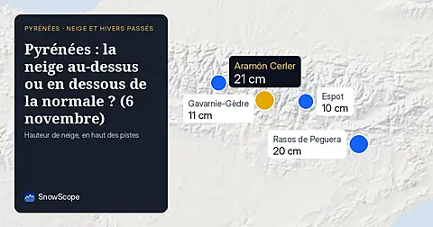
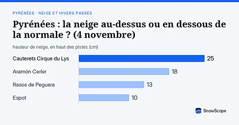

Bulletins neige · Hivers passés
Des bulletins neige quotidiens pour les skieurs : où est la neige, ce qui arrive et où skier, d'après la carte de neige SnowScope et les stations de mesure. Chaque chiffre vient des données du jour.

SnowScope classe Whistler Blackcomb premier dans l'Ouest canadien aujourd'hui, avec environ 153 cm sur le haut du domaine, devant Big White …

Ce que disent 46 hivers passés sur la neige à Tignes : hauteur habituelle en bas, à mi-pente et au sommet du domaine Tignes – Val d'Isère, mois par mois, les semaines qui ne déçoivent jamais.

Piau-Engaly se situe à 1 762 m avec des pistes jusqu'à 2 527 m. Sur 46 hivers passés, la profondeur habituelle au sommet est de 88 cm en bas, 123 cm à mi-pente et 159 cm au sommet.

Gavarnie-Gèdre domine les Pyrénées avec 26 cm en altitude le 22 novembre. La couverture neigeuse a triplé en deux jours dans la région.

L'Alpe d'Huez Grand Domaine mois par mois : hauteur de neige habituelle en bas, à mi-pente et au Pic Blanc d'après 46 hivers passés, les semaines sûres, les décembres faibles et la tendance.

5 stations dans les Alpes, 46 hivers passés, une date : voici comment se situe aujourd'hui. Nettement au-dessus de la normale : 0. Confiance : bonne …

Les neiges de début de saison dans les Alpes dépassent de 38 % la moyenne des 46 dernières années. Les pentes intermédiaires de La Plagne accumulent 36 cm de plus que d'habitude à cette date, avec de fortes chutes prévues jusqu'à dimanche.



Y a-t-il plus de neige qu'il y a un an ? Nous avons comparé aujourd'hui avec le 15 novembre de l'hiver dernier dans 4 stations dans l'Ouest canadien …

La Grave domine les Alpes avec 97 cm en versants supérieurs. La couverture neigeuse se réduit alors que le début d'hiver s'installe inégalement dans la région le 15 novembre.

À Big White le 15 novembre, les pentes supérieures retiennent 68 cm près du sommet tandis que la base reste dégagée ; un gradient vertical extrême typique du début de saison.


À 1 308 m à Dent de Vaulion, les 0 cm du jour dépassent ce que cette date a donné lors de 34 des 46 hivers passés (habituel : 0 cm) : une bonne …

Y a-t-il plus de neige qu'il y a un an ? Nous avons comparé aujourd'hui avec le 11 novembre de l'hiver dernier dans 4 stations dans les Pyrénées : 0 …

Jusqu'où la neige est descendue, quand elle est partie, et comment cet hiver se compare à 2008-09 et aux années sèches.
Nous avons comparé la neige du 10 novembre avec la neige la plus épaisse de chaque hiver, dans 46 stations de ski et sur 46 hivers. Un début enneigé aide, mais moins que beaucoup de skieurs ne le pensent.

Trois hivers maigres d'affilée ont pris fin en 2025-26 ; cet automne a commencé normalement.

Sur 46 hivers, les stations du versant italien et des Alpes du Sud françaises ont connu 24 fois un hiver relativement plus généreux que le versant nord. Le graphique, les grandes années et la météo qui les explique.

En décembre, la neige dépend d'abord de l'altitude. 46 hivers passés dans 676 stations des Alpes montrent combien de neige attendre le 1er, le 15 et le 22 décembre, de moins de 1 200 m à plus de 2 400 m.

Vail en chiffres : un pic habituel d'environ 64 in (162 cm) à mi-pente sur 46 hivers passés, mars le mois le plus enneigé, plus domaine, accès et sécurité.

Zermatt en chiffres : où la neige tient, les mois les plus sûrs et comment rejoindre le village sans voitures, d'après 46 hivers passés.

Steamboat, Colorado, en famille : ce qui convient aux tout-petits, aux enfants, aux ados et aux parents, avec la neige de 46 hivers passés à trois altitudes.

Verbier est-il fait pour les débutants ? Quand la neige est-elle la meilleure ? Comment y aller ? Réponses sur les 4 Vallées et 46 hivers passés.

Comment passer un premier jour à Park City Mountain, Utah, et quand y aller : notre historique donne environ 71 in (180 cm) au pic habituel à mi-pente sur 46 hivers passés.

Le Sella Ronda depuis Sëlva dans le Val Gardena : cols de Gardena, Campolongo, Pordoi et Sella dans l'ordre, avec notre historique de neige de 46 hivers passés.

Mt Baker, État de Washington : environ 133 in (337 cm) au pic habituel à mi-pente sur 46 hivers passés, un record mondial de neige, aucun hébergement sur place.

Val d'Isère et l'Espace Killy pour débutants, skieurs moyens et experts, avec la neige de 46 hivers passés à trois altitudes.

Préparez Mammoth Mountain selon la saison : environ 93 in (235 cm) au pic habituel à mi-pente sur 46 hivers passés, mars le plus enneigé, longs printemps, hivers variables.

Kitzbühel est célèbre et basse. Ce que disent 46 hivers passés de la neige à 762 m, 1 377 m et 1 993 m, ce qui a changé, et quelles semaines sont le pari le plus sûr.

Jackson Hole garde la neige profonde jusqu'au printemps sur ses hauts sommets. Nous avons vérifié six croyances courantes contre 46 hivers d'historique de neige. Données de novembre 2026.

Dix points pratiques pour un séjour de ski à Livigno : les routes, le froid, les boutiques détaxées, les deux versants et le meilleur moment pour la neige, d'après 46 hivers passés.

Whitewater se situe dans un bol régulièrement enneigé des Selkirks près de Nelson. À mi-montagne, les pics typiques atteignent 165 cm. Voici comment se déroule un jour de tempête sur une station de 670 m de vertical.
Arc 1600, 1800, 1950 et 2000 comparés pour la neige, les pistes et l'accès, avec 46 hivers passés de notre historique de neige à trois altitudes des Arcs.

Whistler Blackcomb pour tous les niveaux, avec notre historique : environ 370 cm au pic habituel à mi-pente sur 46 hivers passés, mars et avril les plus enneigés.

Des paysans walser au Weißer Ring : les dates qui ont fait Lech Zürs, puis notre historique de neige hier et aujourd'hui, les quinze premiers de 46 hivers passés contre les quinze derniers.

Une liste pratique pour Stowe, Vermont : couches, protection du visage, masque, carres affûtées et chaufferettes, reliée à la neige de 46 hivers passés sur le Mount Mansfield.

Skier à Lake Louise en début de saison : pourquoi la station démarre tôt, à quoi ressemble d'habitude la neige de novembre et décembre sur 46 hivers passés, et comment skier une neige encore mince.

Ce qui est vrai à La Grave, la montagne hors-piste sous la Meije : terrain, sécurité, neige par mois et tendance, d'après 46 hivers passés.

Big Sky, Montana, facile à se représenter : 5 850 acres sous le Lone Peak, et une neige environ cinq fois plus épaisse près du sommet qu'en bas sur 46 hivers passés.

Magic Mountain à Londonderry, Vermont : une petite station indépendante avec des sous-bois raides, un vieux télésiège rouge et peu de neige naturelle. Cinq choses à savoir, avec la neige de 46 hivers passés.

Skiez d'abord en pensée tout le dénivelé de Revelstoke : la neige au sommet, à mi-pente et en bas dans la vallée sur 46 hivers passés, et quand chaque partie est au mieux.

Sept jours dans la Silvretta Arena, un par un : où est la neige, quand passer à Samnaun, et ce que disent 46 hivers passés de la neige d'Ischgl à trois altitudes.

Aspen Snowmass comparé : Snowmass a environ 75 in (190 cm) au pic habituel à mi-pente sur 46 hivers passés, Aspen Mountain environ 69 in (174 cm). Terrain, accès, sécurité.

Gourette et Cauterets côte à côte : altitudes, neige habituelle par mois, meilleures semaines et accès, d'après 46 hivers passés.

Mad River Glen, Vermont : neige naturelle, environ 30 in (75 cm) au pic habituel à mi-pente sur 46 hivers passés, février le plus enneigé. Trois façons de prévoir sa journée.

Banff Sunshine Village mois par mois : environ 100 cm à mi-pente en mars d'un hiver habituel sur 46 hivers passés, avril le plus enneigé en haut, saison jusqu'à fin mai.

Le mi-pente d'Alta atteint généralement 276 cm. Notre historique de 46 hivers répond à quand venir, quelle altitude vous convient, et pourquoi la route compte. Données du 7 novembre 2026.

L'Alpe d'Huez fait face au soleil. Comment organiser sa journée selon l'heure et l'altitude, avec la neige de 46 hivers passés, des villages bas au Pic Blanc.

Notre série de 46 hivers dans les Alpes, 108 points de 667 à 3 872 m : moins de jours de neige partout, nettement à 81 %. Ce qui a changé et pourquoi.

À l'altitude d'Oukaïmeden, notre série de 46 hivers montre 12 % de jours de neige en moins ; plus bas, le signal se perd. Ce que l'on sait.
Baqueira-Beret est dans le Val d'Aran, côté atlantique des Pyrénées. Ce que cela change pour sa neige, vérifié sur 46 hivers passés face à La Molina, et quand y aller.

Bonneval-sur-Arc se situe à 1 794 m dans la haute vallée de l'Arc, fermée par l'Iseran en hiver. L'épaisseur de neige varie de 99 cm en bas à 335 cm au sommet. Données de 46 hivers passés, novembre 2026.

Comment passer une première journée de ski à Chamonix, des Grands Montets au-dessus d'Argentière au bon moment pour chaque pente, avec 46 hivers de données.

Cortina d'Ampezzo de trois façons : Tofana, Faloria-Cristallo et Cinque Torri-Lagazuoi, avec 46 hivers de données de neige à trois altitudes.

Chantarella, Marguns, Piz Nair, White Turf : les mots qu'on entend à St-Moritz, expliqués, et ce que 46 hivers passés de notre historique de neige disent de chaque altitude de la Corviglia.

Davos et Klosters partagent six montagnes de ski. Un plan jour par jour, en commençant par le Parsenn, avec ce que 46 hivers passés de notre historique disent de ses altitudes.
Quand réserver Courchevel et les 3 Vallées, quel village choisir et où la neige tient, d'après 46 hivers passés.

St Anton et Ski Arlberg au fil de l'hiver : la hauteur de neige habituelle chaque mois à trois altitudes, d'après 46 hivers passés.

Mount Washington retient 145 cm le 8 novembre, le plus profond de l'Ouest canadien, mais le niveau de congélation montera au-dessus du sommet d'ici le 11 novembre.
Y a-t-il plus de neige qu'il y a un an ? Nous avons comparé aujourd'hui avec le 8 novembre de l'hiver dernier dans 4 stations dans les Alpes : 0 ont …

Une année de neige à Sölden, phase par phase : quand les glaciers blanchissent, le week-end de Coupe du monde, le cœur de l'hiver et les semaines de printemps, d'après 46 hivers passés à trois altitudes.

Moins de jours de neige aux 120 points étudiés dans les Pyrénées depuis 1980-81, surtout sous 1 500 m : notre série de 46 hivers et la recherche.

Un carnet pratique sur Oukaïmeden, dans le Haut Atlas : quand la neige arrive, en quelle quantité, quelles pentes viser et comment y aller depuis Marrakech.

Comment réussir une journée à Luz-Ardiden, petit domaine au-dessus de Luz-Saint-Sauveur dans les Hautes-Pyrénées : la route, les deux secteurs, la neige de 46 hivers passés et les semaines à choisir.

Michlifen, près d'Ifrane, a de la neige par courts épisodes plutôt qu'une saison. Ce que montrent 46 hivers passés, pourquoi la hauteur habituelle est nulle, et comment être là les bons jours.

Trois façons de passer une journée depuis Méribel : à l'est vers Courchevel, au sud vers Val Thorens, ou sur place au Mont Vallon, avec la neige de 46 hivers passés à trois altitudes.

Nous avons comparé la neige du jour dans 4 stations dans les Pyrénées avec la même date lors de chacun des 46 hivers passés. 1 sont nettement …

Bonneval-sur-Arc (France) a la neige la plus épaisse dans les Alpes aujourd'hui, avec environ 52 cm sur le haut du domaine. Suivent La Grave avec …


Le 4 novembre, Les Deux Alpes compte 45 centimètres au sommet mais zéro en bas — un écart d'altitude extrême en début de saison.

Nous avons comparé la neige du jour dans 4 stations dans les Pyrénées avec la même date lors de chacun des 46 hivers passés. 1 sont nettement …

Quelles stations gardent la neige tout l'hiver ? Nous avons analysé 46 hivers passés. Dans les Alpes, 211 des 1 178 stations sont fiables ; l'Ouest américain en a 77 sur 195. Données du 3 novembre 2026.

Les hauteurs de neige en Alpes sont en retrait par rapport à la normale en début novembre, avec seulement 55 cm dans les meilleures stations au 3 novembre.

C'est à Big White qu'il y a le plus de neige dans l'Ouest canadien : environ 91 cm sur le haut du domaine. Viennent …